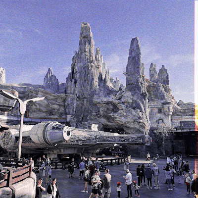

Recovered weblog entry
No devil in these details

Lighting seen while in line for "Rise of the Resistance"
Disney's Imagineers are well-known for their attention to the tiniest and most insignificant of details. As I have grown older, Disneyland (with its little brother, California Adventure) has rapidly expanded with new rides and lands that pay homage to their newer IP. In my mind, I see the shift to contemporary details began with Bug's Land, which sadly no longer exists but within the memories of Disney fandom.
Walking into Bug's Land back in 2000 was transformative; from the entrance, you were transported to a world where everything was bigger than you. It wasn't just sights, but the sensation of touch and smell that pulled this magic together.

Just one example of Cars Land
Fast forward another decade, when Cars Land was launched to critical acclaim. Before going, I read article after article, and saw countless pictures posted to both social media and professional journalism sites, but nothing prepared me for what I encountered upon my arrival.
I don't know the level of collaboration that exists between Disney/Pixar's film studios and Disney's park organization, and frankly, I don't want to know...but it was mind blowing to see Cars Land in person. Again, every sensory faculty attached to my human frame was catered to with remarkable precision. This was Disney's Imagineering with all of its intended magic and might.
If you've ever wondered why some people are such zealots when it comes to Disneyland, perhaps my overly verbose descriptions and sumptuous fawning can give you some idea.
Which brings me to my final word for the day; Star Wars Land: Galaxy's Edge. It launched nearly three years ago, during which time I've seen countless pictures and listened to the reveling of friends, relatives, and others. I prepared myself accordingly. Expectations were set to be blown away by what I would see.

Yep, that's a full-sized Falcon
I still couldn't believe my own eyes. As opposed to Cars Land, where Radiator Springs was the blueprint whereupon the Imagineers set their sights, Galaxy's Edge is an unknown quantity; a brand new planet within the Star Wars universe. Yet you know upon walking inside this land that you are a part of the Star Wars experience. Every single detail, even down to the custom Coca-Cola bottles commissioned for this area of the park, screams of an immediate transportation to Batuu.
On the final day, the wife and I spent one of our final hours there. We didn't ride any rides, didn't eat any food; we just sat or walked around. Life is complicated, fraught with stress, drama, and enough heartache to fill the Millennium Falcon. So, to be able to escape to this tiny land within a small park in what was once tracts of orange groves in Anaheim California, the mindless wander amongst the fruits of some of the world's best designers was a welcome respite.